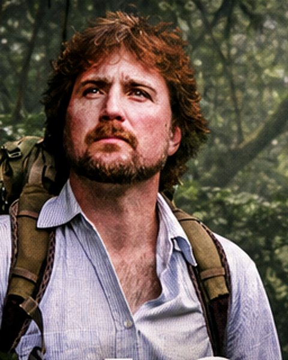
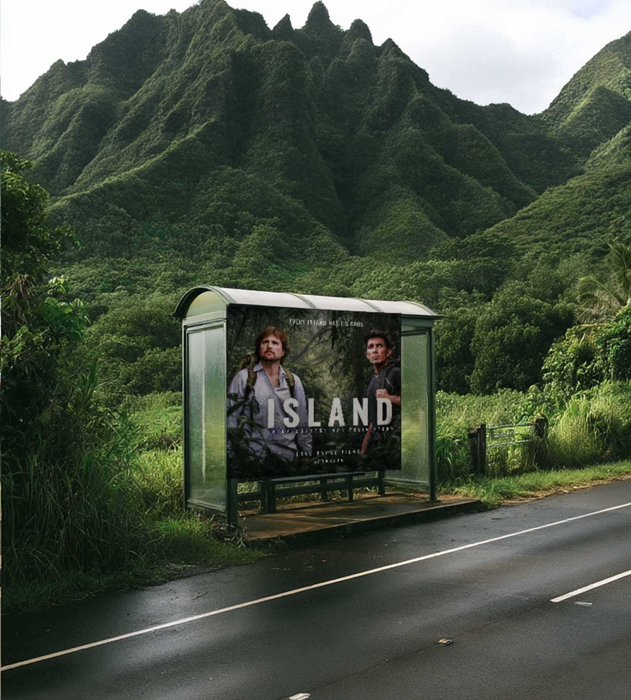
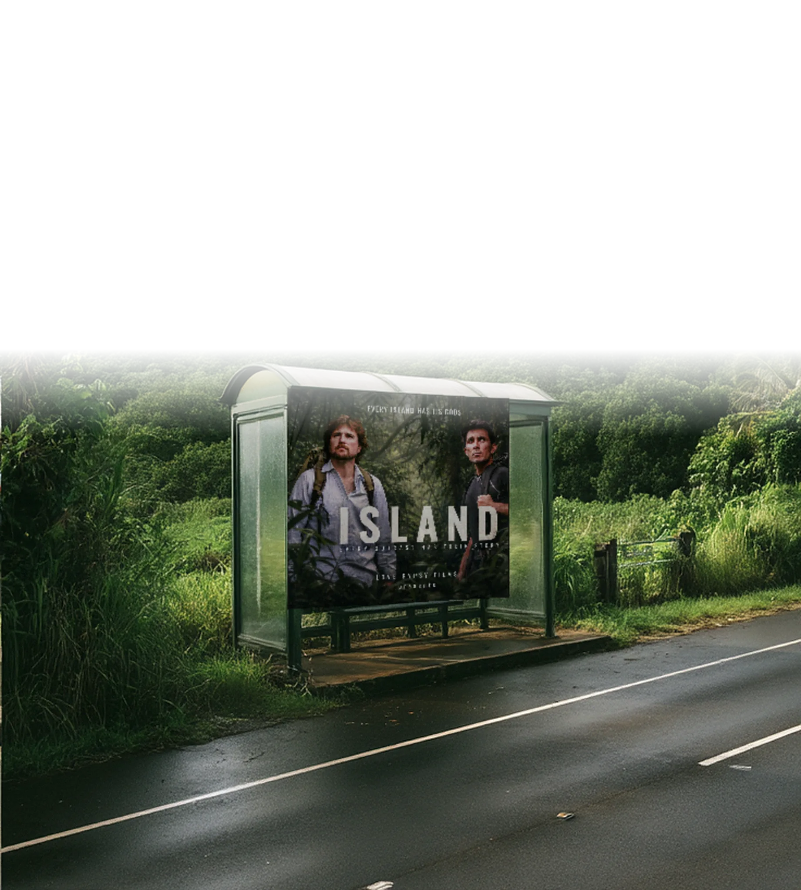
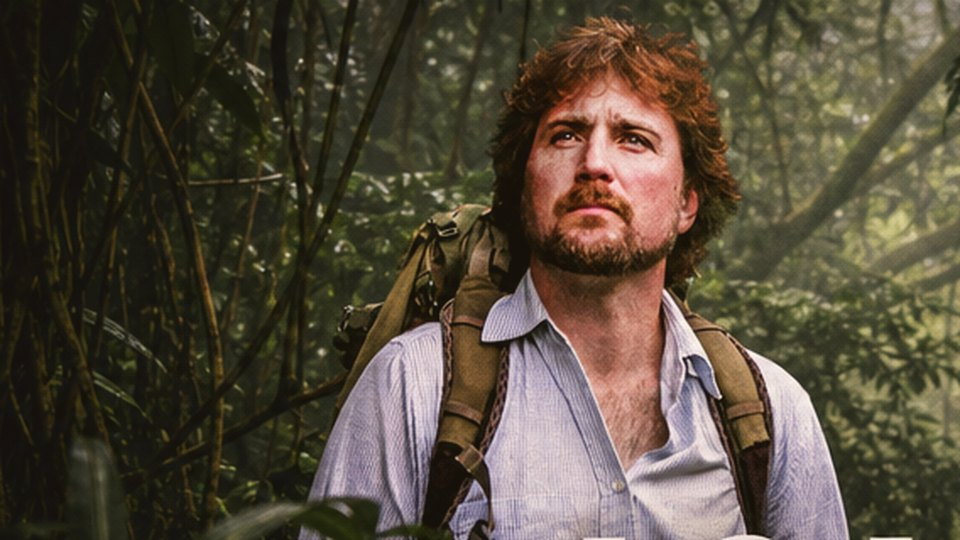
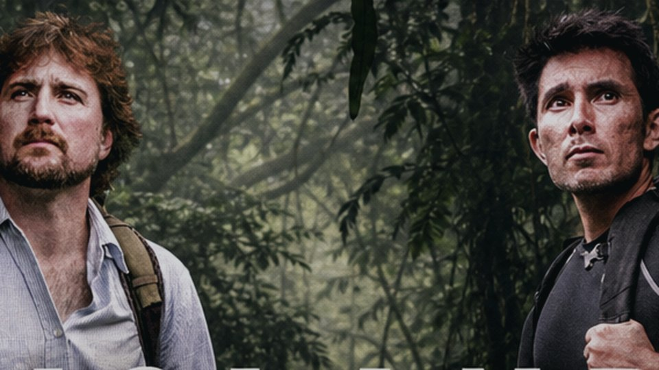
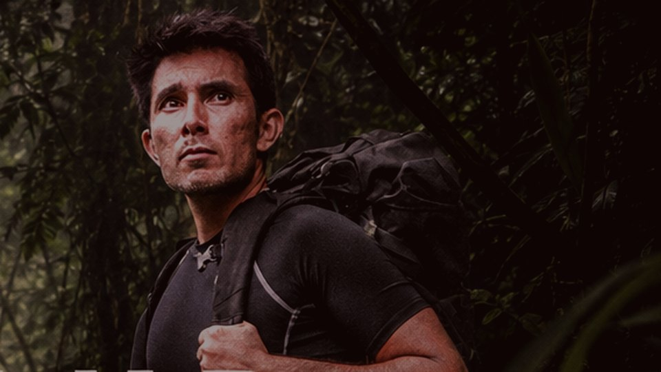

BEN
THE OUTLAW MYSTIC
Came to Hawaii to heal a broken heart. Years in, he is living as an outlaw and a mystic, convinced he is the embodiment of Satan, and the target of territorial locals.
Two friends walk away from the world and into the Hawaiian wilds. Twelve years later, the island has other plans.


EVERY OUTCAST HAS THEIR STORY
Two friends walk away from the world and into the Hawaiian wilds. Twelve years later, the island has other plans.
Outcast and homeless in Hawaii - two friends confront the depths of their existence - only to awaken ancient forces obsessed with their total destruction.
Two strangers from different corners of the world, Ben and Anthony, travel to Hawaii - one to heal a broken heart, the other to find himself by stepping away from society. They end up living homeless in the wilds, documenting a journey that will consume them both.
Years pass and Ben descends into an outlaw existence, battling addiction while embracing the life of a tormented mystic. Convinced he is the embodiment of Satan, he becomes the target of territorial locals and is eventually jailed following a near-fatal altercation.
Meanwhile, Anthony struggles to complete the now out-of-control documentary. Spending everything he has, enduring declining health, homelessness and an increasingly volatile co-star, he searches for meaning in a journey that has taken everything from him.

THE OUTLAW MYSTIC
Came to Hawaii to heal a broken heart. Years in, he is living as an outlaw and a mystic, convinced he is the embodiment of Satan, and the target of territorial locals.
THE ONE HOLDING THE CAMERA
Came to find himself by stepping away from society. Ended up the one filming it, through declining health, homelessness, and a co-star spiralling out of control.
What began as two strangers escaping their lives became an eighteen-episode record of a friendship coming apart in the wilds of Hawaii, filmed from the inside by one of the men living it. There was no crew, no base, and no way back. The camera kept rolling because it was the only thing that made sense of what was happening.
All three seasons are available as screeners to sales agents, distributors and festival programmers.
Episodes are served through a private, password-protected showcase. Access is by invitation, and it is usually granted the same day.
The public trailer is free to share. Episode links are not.

SEASON ONE
SEASON TWO
SEASON THREEPLACEHOLDER — NOT THE FINISHED TRAILER